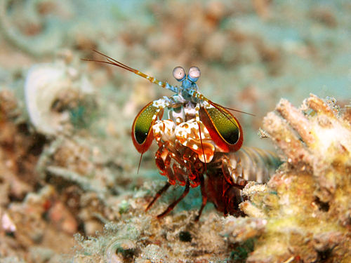

Fatos sobre o Stomatopoda
Informações gerais
| Reino | Filo | Subfilo | Classe | Subclasse | Ordem |
|---|---|---|---|---|---|
| Animalia | Arthropoda | Crustacea | Malacostraca | Hoplocarida | Stomatopoda |
Medo não tem tamanho
Aquários geralmente não têm exemplares de Stomatopoda porque eles tendem não só a matar qualquer outra criatura que eles dividam o tanque com, como também poderiam quebrar o espelho do aquário.
Máquina mortífera

O Stomatopoda é uma das criaturas mais violentas da terra. Ele possui dois apêndices adaptados para caça na frente do seu corpo que aceleram na mesma velocidade que um tiro de uma arma calibre .22.
Referências:
- https://theoatmeal.com/comics/mantis_shrimp